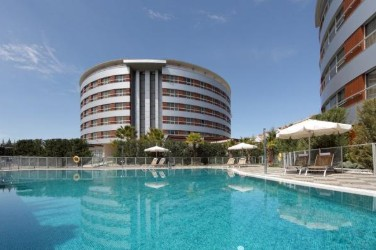

El hotel Mar de Sueños está situado en una zona tranquila de la costa tropical,
a tan solo 100 metros de la playa.
Es un hotel familiar que cuenta con varios tipos de habitaciones. Todas están decoradas
y pintadas con una temática de disney, la cúal el cliente puede decidir a la hora de realizar
su reserva.
Disponemos de varios servicios y actividades durante todo el día para familias, adultos y para los más
pequeños.
La recepción de nuestro hotel está abierta las 24 horas del día y el desayuno se sirve en la cafetería
del hotel.